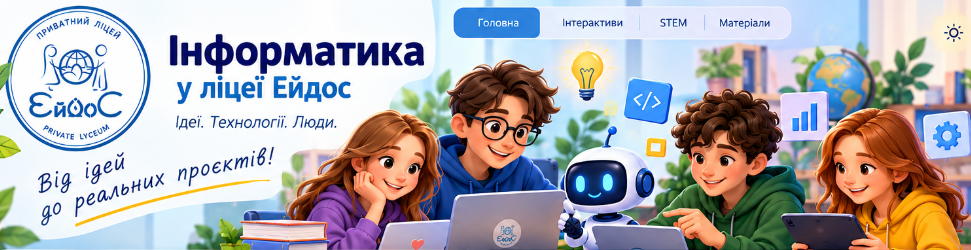

🧩
6 клас
Цифрова крамничкаОбираємо товар, бренд, ціну та рекламу
40 хв · онлайн / у класіВідкрити інтерактив →
Інтерактивні заняття, STEM-дослідження й цифрові інструменти. Навчаємося через власні рішення.
🌻 EidoS FAIR · маркетингова кампаніяОбираємо товар, бренд, ціну та рекламу
40 хв · онлайн / у класіВідкрити інтерактив →Опитування, аудиторія та аргументи
40 хв · онлайн / у класіВідкрити інтерактив →Таблиці, діаграми та бюджет
40 хв · онлайн / у класіВідкрити інтерактив →Сегментація та стратегія
40 хв · онлайн / у класіВідкрити інтерактив →Конверсія, ефективність і бюджет
40 хв · онлайн / у класіВідкрити інтерактив →A/B-тестування, ризики та рекомендації
40 хв · онлайн / у класіВідкрити інтерактив →